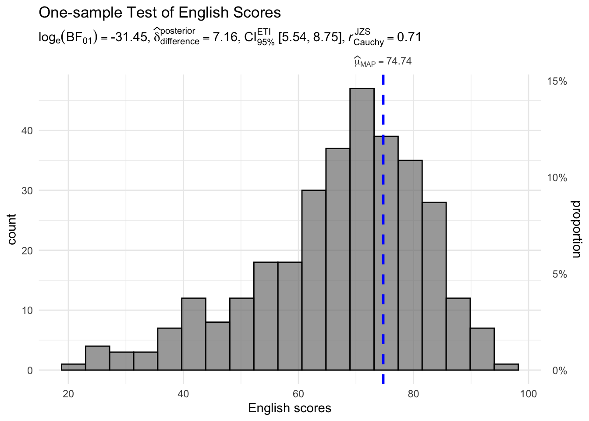
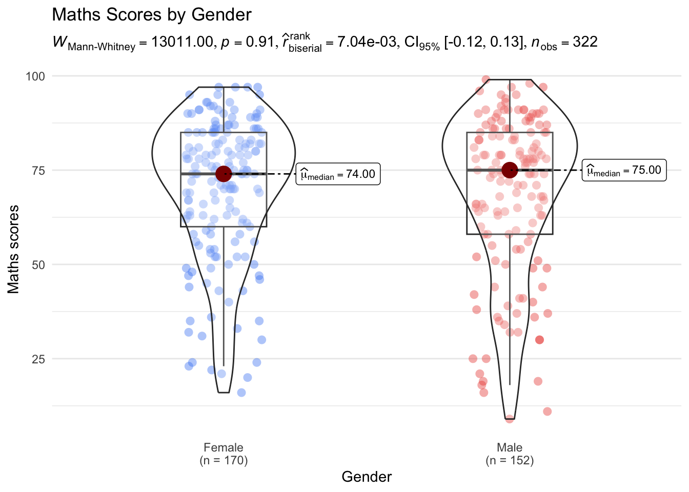
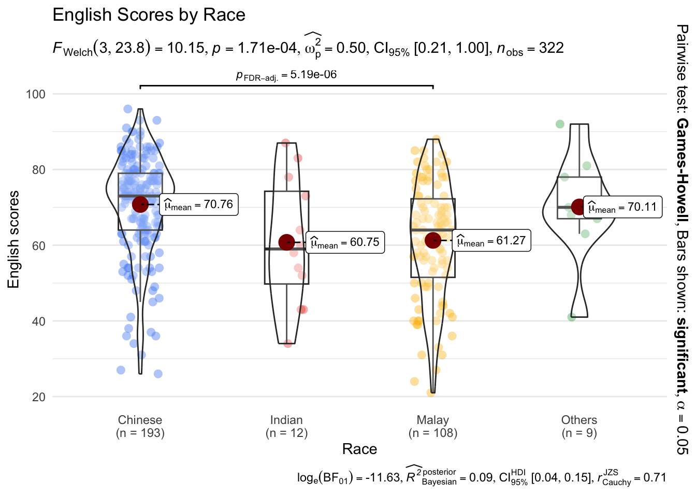
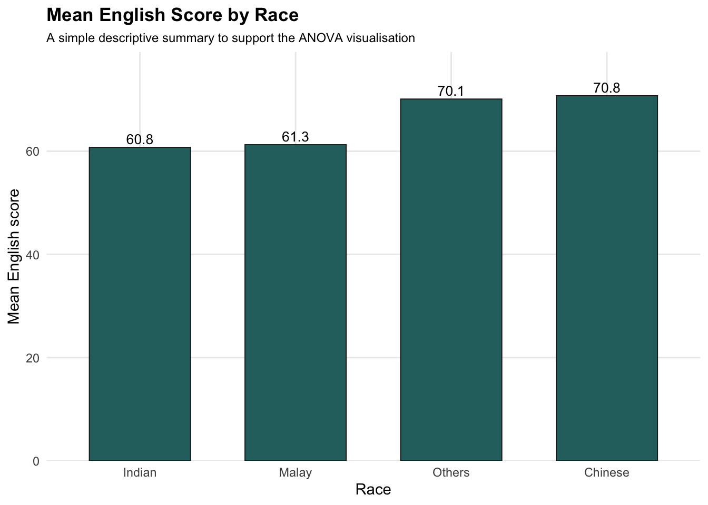
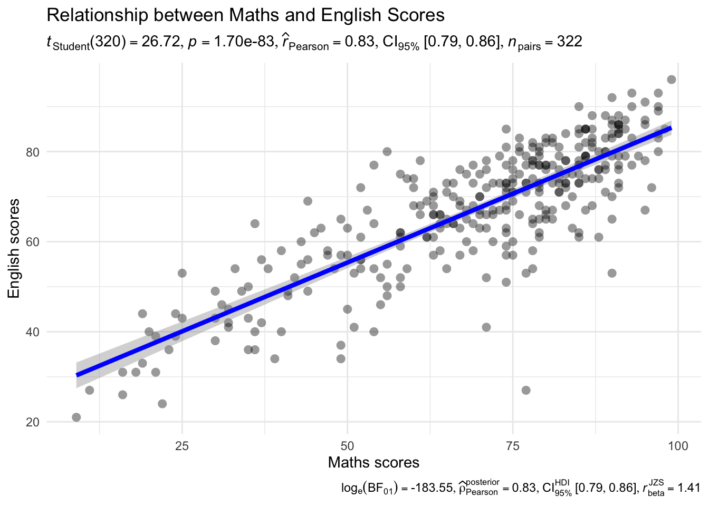
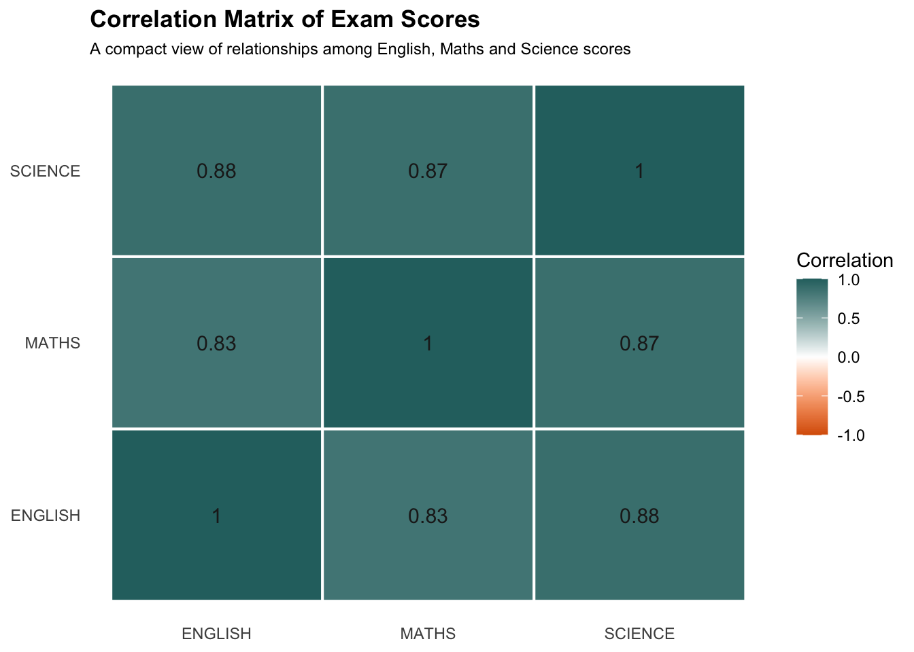
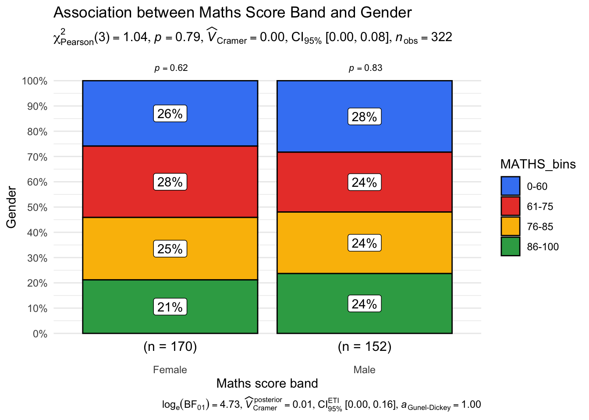
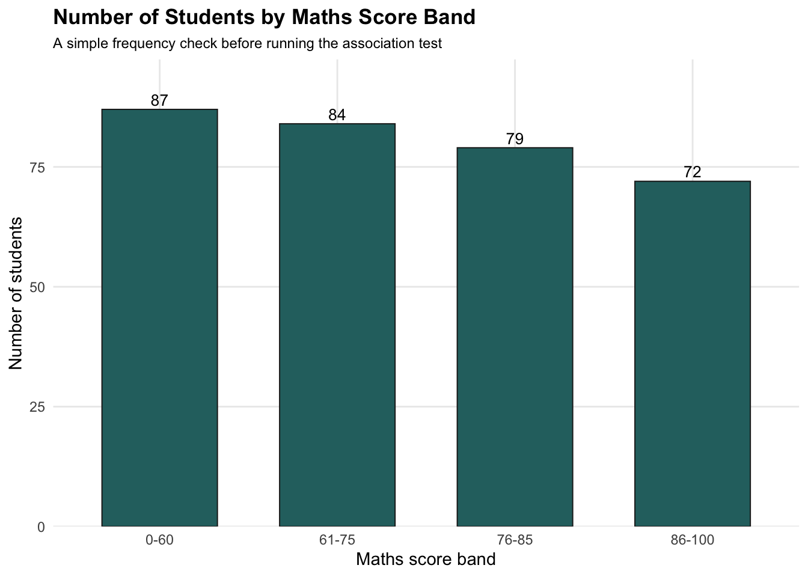

pacman::p_load(ggstatsplot, tidyverse, ggthemes)Hands-on_Ex05b
1 Visual Statistical Analysis
1.1 Learning Outcome
In this hands-on exercise, we focus on visual statistical analysis. Instead of producing charts that only show patterns, we will use statistical visualisation to combine graphics with test results.
The main package used in this exercise is ggstatsplot. It extends ggplot2 by adding statistical test results directly into the visual output. This is useful because the viewer can see both the chart and the statistical evidence in one place.
By the end of this exercise, we should be able to:
- use
ggstatsplotto create graphics with statistical information; - conduct a one-sample test using
gghistostats(); - explain the basic idea of Bayes Factor;
- compare two groups using
ggbetweenstats(); - compare more than two groups using one-way ANOVA;
- test correlation using
ggscatterstats(); - test association between categorical variables using
ggbarstats().
1.2 Visual Statistical Analysis with ggstatsplot
ggstatsplot is an extension of ggplot2. The main idea is simple: instead of separating the chart and the statistical test output, ggstatsplot puts them together.
This is helpful for visual analytics because the chart does not only show the shape of the data. It also provides statistical information such as sample size, p-value, test statistic, confidence interval and Bayes Factor.
In normal data analysis, we may first draw a plot and then run a separate statistical test. With ggstatsplot, these two steps can be combined into one visual output. This makes the result easier to read, especially when the audience needs both visual and statistical interpretation.
1.3 Getting Started
1.3.1 Installing and launching R packages
In this exercise, ggstatsplot and tidyverse will be used. tidyverse is mainly used for importing and preparing data, while ggstatsplot is used to create the statistical graphics.
1.3.2 Importing data
The dataset used in this exercise is Exam_data.csv. It contains student examination records, including English, Maths and Science scores, together with grouping variables such as class, gender and race.
exam <- read_csv("../data/Exam_data.csv")Rows: 322 Columns: 7
── Column specification ────────────────────────────────────────────────────────
Delimiter: ","
chr (4): ID, CLASS, GENDER, RACE
dbl (3): ENGLISH, MATHS, SCIENCE
ℹ Use `spec()` to retrieve the full column specification for this data.
ℹ Specify the column types or set `show_col_types = FALSE` to quiet this message.glimpse(exam)Rows: 322
Columns: 7
$ ID <chr> "Student321", "Student305", "Student289", "Student227", "Stude…
$ CLASS <chr> "3I", "3I", "3H", "3F", "3I", "3I", "3I", "3I", "3I", "3H", "3…
$ GENDER <chr> "Male", "Female", "Male", "Male", "Male", "Female", "Male", "M…
$ RACE <chr> "Malay", "Malay", "Chinese", "Chinese", "Malay", "Malay", "Chi…
$ ENGLISH <dbl> 21, 24, 26, 27, 27, 31, 31, 31, 33, 34, 34, 36, 36, 36, 37, 38…
$ MATHS <dbl> 9, 22, 16, 77, 11, 16, 21, 18, 19, 49, 39, 35, 23, 36, 49, 30,…
$ SCIENCE <dbl> 15, 16, 16, 31, 25, 16, 25, 27, 15, 37, 42, 22, 32, 36, 35, 45…summary(exam) ID CLASS GENDER RACE
Length :322 Length :322 Length :322 Length :322
N.unique :322 N.unique : 9 N.unique : 2 N.unique : 4
N.blank : 0 N.blank : 0 N.blank : 0 N.blank : 0
Min.nchar: 10 Min.nchar: 2 Min.nchar: 4 Min.nchar: 5
Max.nchar: 10 Max.nchar: 2 Max.nchar: 6 Max.nchar: 7
ENGLISH MATHS SCIENCE
Min. :21.00 Min. : 9.00 Min. :15.00
1st Qu.:59.00 1st Qu.:58.00 1st Qu.:49.25
Median :70.00 Median :74.00 Median :65.00
Mean :67.18 Mean :69.33 Mean :61.16
3rd Qu.:78.00 3rd Qu.:85.00 3rd Qu.:74.75
Max. :96.00 Max. :99.00 Max. :96.00 The key numeric variables in this dataset are ENGLISH, MATHS and SCIENCE. These variables can be used for statistical comparison, correlation analysis and distribution-based testing.
1.4 One-sample test: gghistostats() method
A one-sample test is used when we want to compare one numeric variable against a fixed reference value. In this example, we test whether the English scores are meaningfully different from a reference score of 60.
The function gghistostats() creates a histogram and adds statistical test results directly to the plot.
set.seed(1234)
gghistostats(
data = exam,
x = ENGLISH,
type = "bayes",
test.value = 60,
xlab = "English scores",
title = "One-sample Test of English Scores",
subtitle = "Testing whether English scores differ from the reference value of 60",
ggtheme = ggplot2::theme_minimal()
)
set.seed(1234)
gghistostats(
data = exam,
x = ENGLISH,
type = "bayes",
test.value = 60,
xlab = "English scores",
title = "One-sample Test of English Scores",
subtitle = "Testing whether English scores differ from the reference value of 60",
ggtheme = ggplot2::theme_minimal()
)The histogram shows the distribution of English scores, while the statistical annotation gives the test result. This is more useful than a normal histogram because it connects the visual pattern with statistical evidence.
In this case, the reference value is set as 60. If the centre of the distribution is clearly above or below 60, the visual result and the statistical test should point in the same direction.
1.5 Unpacking the Bayes Factor
Bayes Factor is used to compare the strength of evidence between two competing hypotheses.
In a simple setting:
H0means the null hypothesis;H1means the alternative hypothesis;BF10compares how much more likely the data is underH1than underH0.
If BF10 is large, the data provides stronger evidence for the alternative hypothesis. If BF10 is close to 1, the evidence is weak or inconclusive. If BF10 is very small, the evidence may support the null hypothesis instead.
A simple way to understand it:
bayes_factor_example <- tibble(
BF10 = c(1, 3, 10, 30, 100),
Interpretation = c(
"No clear evidence",
"Anecdotal evidence for H1",
"Moderate evidence for H1",
"Strong evidence for H1",
"Extreme evidence for H1"
)
)
bayes_factor_example# A tibble: 5 × 2
BF10 Interpretation
<dbl> <chr>
1 1 No clear evidence
2 3 Anecdotal evidence for H1
3 10 Moderate evidence for H1
4 30 Strong evidence for H1
5 100 Extreme evidence for H1 Bayes Factor is useful because it does not only ask whether a result is statistically significant. It asks how strong the evidence is for one hypothesis compared with another.
1.6 How to interpret Bayes Factor
The interpretation of Bayes Factor should not be treated mechanically, but the following table gives a common practical guide.
bf_interpretation <- tibble(
Bayes_Factor = c("1 to 3", "3 to 10", "10 to 30", "30 to 100", "> 100"),
Evidence = c(
"Weak evidence",
"Moderate evidence",
"Strong evidence",
"Very strong evidence",
"Extreme evidence"
)
)
bf_interpretation# A tibble: 5 × 2
Bayes_Factor Evidence
<chr> <chr>
1 1 to 3 Weak evidence
2 3 to 10 Moderate evidence
3 10 to 30 Strong evidence
4 30 to 100 Very strong evidence
5 > 100 Extreme evidence The main idea is that Bayes Factor gives a graded interpretation. This is different from a p-value, where the result is often simplified into significant or not significant.
Note
A p-value and a Bayes Factor answer different questions. A p-value focuses on the probability of observing the data under the null hypothesis, while a Bayes Factor compares the relative evidence between two hypotheses.
1.7 Two-sample mean test: ggbetweenstats()
A two-sample test is used when we want to compare a numeric variable between two groups. In this example, Maths scores are compared by gender.
The function ggbetweenstats() automatically creates a comparison plot and adds statistical test results.
ggbetweenstats(
data = exam,
x = GENDER,
y = MATHS,
type = "np",
title = "Maths Scores by Gender",
subtitle = "Two-group comparison using a non-parametric test",
xlab = "Gender",
ylab = "Maths scores",
messages = FALSE,
ggtheme = ggplot2::theme_minimal()
)
ggbetweenstats(
data = exam,
x = GENDER,
y = MATHS,
type = "np",
title = "Maths Scores by Gender",
subtitle = "Two-group comparison using a non-parametric test",
xlab = "Gender",
ylab = "Maths scores",
messages = FALSE,
ggtheme = ggplot2::theme_minimal()
)The argument type = "np" means that a non-parametric test is used. This is useful when we do not want to assume that the scores are normally distributed.
This chart allows us to compare the distribution, median and statistical difference between male and female students in Maths performance.
1.8 Oneway ANOVA Test: ggbetweenstats() method
When there are more than two groups, a one-way ANOVA can be used to test whether the mean values differ across groups. In this example, English scores are compared across different race groups.
Here, ggbetweenstats() is used again, but this time the grouping variable has more than two categories.
ggbetweenstats(
data = exam,
x = RACE,
y = ENGLISH,
type = "p",
mean.ci = TRUE,
pairwise.comparisons = TRUE,
pairwise.display = "s",
p.adjust.method = "fdr",
title = "English Scores by Race",
subtitle = "One-way ANOVA with pairwise comparisons",
xlab = "Race",
ylab = "English scores",
messages = FALSE,
ggtheme = ggplot2::theme_minimal()
)
ggbetweenstats(
data = exam,
x = RACE,
y = ENGLISH,
type = "p",
mean.ci = TRUE,
pairwise.comparisons = TRUE,
pairwise.display = "s",
p.adjust.method = "fdr",
title = "English Scores by Race",
subtitle = "One-way ANOVA with pairwise comparisons",
xlab = "Race",
ylab = "English scores",
messages = FALSE,
ggtheme = ggplot2::theme_minimal()
)The argument type = "p" means a parametric test is used. The argument mean.ci = TRUE adds the confidence interval around the mean.
The pairwise comparison settings help us identify which group differences are statistically meaningful.
The argument pairwise.display = "s" means that only significant pairwise comparisons will be displayed. This keeps the plot cleaner and avoids too much unnecessary annotation.
Tip
For pairwise.display, "s" shows only significant comparisons, "ns" shows only non-significant comparisons, and "all" shows all pairwise comparisons.
1.8.1 ggbetweenstats - Summary of tests
To support the visual result, we can also create a simple summary table by race. This does not replace the ANOVA test, but it helps us understand the group-level pattern more clearly.
race_english_summary <- exam %>%
group_by(RACE) %>%
summarise(
n = n(),
mean_english = mean(ENGLISH, na.rm = TRUE),
median_english = median(ENGLISH, na.rm = TRUE),
sd_english = sd(ENGLISH, na.rm = TRUE)
) %>%
arrange(desc(mean_english))
race_english_summary# A tibble: 4 × 5
RACE n mean_english median_english sd_english
<chr> <int> <dbl> <dbl> <dbl>
1 Chinese 193 70.8 73 13.2
2 Others 9 70.1 70 14.0
3 Malay 108 61.3 64 15.2
4 Indian 12 60.8 59 16.8ggplot(race_english_summary,
aes(x = reorder(RACE, mean_english),
y = mean_english)) +
geom_col(
fill = "#2A6F6F",
color = "#1F1F1F",
linewidth = 0.35,
width = 0.65
) +
geom_text(
aes(label = round(mean_english, 1)),
vjust = -0.35,
size = 3.5
) +
scale_y_continuous(
name = "Mean English score",
expand = expansion(mult = c(0, 0.12))
) +
labs(
title = "Mean English Score by Race",
subtitle = "A simple descriptive summary to support the ANOVA visualisation",
x = "Race"
) +
theme_minimal() +
theme(
plot.title = element_text(face = "bold"),
plot.subtitle = element_text(size = 9),
panel.grid.minor = element_blank()
)
race_english_summary <- exam %>%
group_by(RACE) %>%
summarise(
n = n(),
mean_english = mean(ENGLISH, na.rm = TRUE),
median_english = median(ENGLISH, na.rm = TRUE),
sd_english = sd(ENGLISH, na.rm = TRUE)
) %>%
arrange(desc(mean_english))
ggplot(race_english_summary,
aes(x = reorder(RACE, mean_english),
y = mean_english)) +
geom_col(
fill = "#2A6F6F",
color = "#1F1F1F",
linewidth = 0.35,
width = 0.65
) +
geom_text(
aes(label = round(mean_english, 1)),
vjust = -0.35,
size = 3.5
) +
scale_y_continuous(
name = "Mean English score",
expand = expansion(mult = c(0, 0.12))
) +
labs(
title = "Mean English Score by Race",
subtitle = "A simple descriptive summary to support the ANOVA visualisation",
x = "Race"
) +
theme_minimal() +
theme(
plot.title = element_text(face = "bold"),
plot.subtitle = element_text(size = 9),
panel.grid.minor = element_blank()
)This small extension is useful because the statistical plot can sometimes look information-heavy. The bar chart gives a direct descriptive view before interpreting the full statistical result.
1.9 Significant Test of Correlation: ggscatterstats()
Correlation analysis is used to examine whether two numeric variables move together. In this example, we test the relationship between Maths scores and English scores.
The function ggscatterstats() creates a scatterplot and adds correlation test results.
ggscatterstats(
data = exam,
x = MATHS,
y = ENGLISH,
marginal = FALSE,
title = "Relationship between Maths and English Scores",
xlab = "Maths scores",
ylab = "English scores",
messages = FALSE,
ggtheme = ggplot2::theme_minimal()
)
ggscatterstats(
data = exam,
x = MATHS,
y = ENGLISH,
marginal = FALSE,
title = "Relationship between Maths and English Scores",
xlab = "Maths scores",
ylab = "English scores",
messages = FALSE,
ggtheme = ggplot2::theme_minimal()
)The scatterplot shows whether students with higher Maths scores also tend to have higher English scores. The statistical annotation helps us judge whether the relationship is meaningful or weak.
If the points move upward from left to right, the relationship is positive. If the points are widely scattered with no clear direction, the relationship is weak.
1.9.1 My Extension: Correlation Matrix for Exam Scores
To add a small extension, we can calculate the correlation between the three exam subjects: English, Maths and Science.
This gives a quick numerical overview before looking at more detailed statistical plots.
exam_score_cor <- exam %>%
select(ENGLISH, MATHS, SCIENCE) %>%
cor(use = "complete.obs")
exam_score_cor ENGLISH MATHS SCIENCE
ENGLISH 1.0000000 0.8309709 0.8781219
MATHS 0.8309709 1.0000000 0.8694347
SCIENCE 0.8781219 0.8694347 1.0000000exam_score_cor_long <- exam_score_cor %>%
as.data.frame() %>%
rownames_to_column("Subject_1") %>%
pivot_longer(
cols = -Subject_1,
names_to = "Subject_2",
values_to = "Correlation"
)
exam_score_cor_long# A tibble: 9 × 3
Subject_1 Subject_2 Correlation
<chr> <chr> <dbl>
1 ENGLISH ENGLISH 1
2 ENGLISH MATHS 0.831
3 ENGLISH SCIENCE 0.878
4 MATHS ENGLISH 0.831
5 MATHS MATHS 1
6 MATHS SCIENCE 0.869
7 SCIENCE ENGLISH 0.878
8 SCIENCE MATHS 0.869
9 SCIENCE SCIENCE 1 ggplot(exam_score_cor_long,
aes(x = Subject_1,
y = Subject_2,
fill = Correlation)) +
geom_tile(
color = "white",
linewidth = 0.7
) +
geom_text(
aes(label = round(Correlation, 2)),
color = "#1F1F1F",
size = 4
) +
scale_fill_gradient2(
low = "#D95F02",
mid = "white",
high = "#2A6F6F",
midpoint = 0,
limits = c(-1, 1),
name = "Correlation"
) +
labs(
title = "Correlation Matrix of Exam Scores",
subtitle = "A compact view of relationships among English, Maths and Science scores",
x = NULL,
y = NULL
) +
theme_minimal() +
theme(
plot.title = element_text(face = "bold"),
plot.subtitle = element_text(size = 9),
panel.grid = element_blank()
)
exam_score_cor <- exam %>%
select(ENGLISH, MATHS, SCIENCE) %>%
cor(use = "complete.obs")
exam_score_cor_long <- exam_score_cor %>%
as.data.frame() %>%
rownames_to_column("Subject_1") %>%
pivot_longer(
cols = -Subject_1,
names_to = "Subject_2",
values_to = "Correlation"
)
ggplot(exam_score_cor_long,
aes(x = Subject_1,
y = Subject_2,
fill = Correlation)) +
geom_tile(
color = "white",
linewidth = 0.7
) +
geom_text(
aes(label = round(Correlation, 2)),
color = "#1F1F1F",
size = 4
) +
scale_fill_gradient2(
low = "#D95F02",
mid = "white",
high = "#2A6F6F",
midpoint = 0,
limits = c(-1, 1),
name = "Correlation"
) +
labs(
title = "Correlation Matrix of Exam Scores",
subtitle = "A compact view of relationships among English, Maths and Science scores",
x = NULL,
y = NULL
) +
theme_minimal() +
theme(
plot.title = element_text(face = "bold"),
plot.subtitle = element_text(size = 9),
panel.grid = element_blank()
)This extension is small but useful. The scatterplot gives detailed information for one pair of variables, while the correlation matrix gives a broader view across all score variables.
1.10 Significant Test of Association (Dependence): ggbarstats() method
A test of association is used when both variables are categorical. Since Maths score is numeric, we first convert it into score bands.
Here, cut() is used to divide Maths scores into four categories.
exam1 <- exam %>%
mutate(
MATHS_bins = cut(
MATHS,
breaks = c(0, 60, 75, 85, 100),
include.lowest = TRUE,
labels = c("0-60", "61-75", "76-85", "86-100")
)
)glimpse(exam1)Rows: 322
Columns: 8
$ ID <chr> "Student321", "Student305", "Student289", "Student227", "St…
$ CLASS <chr> "3I", "3I", "3H", "3F", "3I", "3I", "3I", "3I", "3I", "3H",…
$ GENDER <chr> "Male", "Female", "Male", "Male", "Male", "Female", "Male",…
$ RACE <chr> "Malay", "Malay", "Chinese", "Chinese", "Malay", "Malay", "…
$ ENGLISH <dbl> 21, 24, 26, 27, 27, 31, 31, 31, 33, 34, 34, 36, 36, 36, 37,…
$ MATHS <dbl> 9, 22, 16, 77, 11, 16, 21, 18, 19, 49, 39, 35, 23, 36, 49, …
$ SCIENCE <dbl> 15, 16, 16, 31, 25, 16, 25, 27, 15, 37, 42, 22, 32, 36, 35,…
$ MATHS_bins <fct> 0-60, 0-60, 0-60, 76-85, 0-60, 0-60, 0-60, 0-60, 0-60, 0-60…After creating the Maths score bands, ggbarstats() is used to test the association between Maths score category and gender.
ggbarstats(
data = exam1,
x = MATHS_bins,
y = GENDER,
title = "Association between Maths Score Band and Gender",
xlab = "Maths score band",
ylab = "Gender",
messages = FALSE,
ggtheme = ggplot2::theme_minimal()
)
ggbarstats(
data = exam1,
x = MATHS_bins,
y = GENDER,
title = "Association between Maths Score Band and Gender",
xlab = "Maths score band",
ylab = "Gender",
messages = FALSE,
ggtheme = ggplot2::theme_minimal()
)This chart helps us check whether the distribution of Maths score bands is associated with gender. If the proportions across score bands look very different between groups, there may be evidence of association.
The statistical information in the plot supports the visual interpretation, so we do not need to rely only on what the bars look like.
1.10.1 My Extension: Distribution of Maths Bands
To make the score bands easier to understand, we can create a simple bar chart showing how many students fall into each Maths band.
exam1 %>%
count(MATHS_bins) %>%
ggplot(aes(x = MATHS_bins,
y = n)) +
geom_col(
fill = "#2A6F6F",
color = "#1F1F1F",
linewidth = 0.35,
width = 0.65
) +
geom_text(
aes(label = n),
vjust = -0.35,
size = 3.5
) +
scale_y_continuous(
name = "Number of students",
expand = expansion(mult = c(0, 0.12))
) +
labs(
title = "Number of Students by Maths Score Band",
subtitle = "A simple frequency check before running the association test",
x = "Maths score band"
) +
theme_minimal() +
theme(
plot.title = element_text(face = "bold"),
plot.subtitle = element_text(size = 9),
panel.grid.minor = element_blank()
)
exam1 %>%
count(MATHS_bins) %>%
ggplot(aes(x = MATHS_bins,
y = n)) +
geom_col(
fill = "#2A6F6F",
color = "#1F1F1F",
linewidth = 0.35,
width = 0.65
) +
geom_text(
aes(label = n),
vjust = -0.35,
size = 3.5
) +
scale_y_continuous(
name = "Number of students",
expand = expansion(mult = c(0, 0.12))
) +
labs(
title = "Number of Students by Maths Score Band",
subtitle = "A simple frequency check before running the association test",
x = "Maths score band"
) +
theme_minimal() +
theme(
plot.title = element_text(face = "bold"),
plot.subtitle = element_text(size = 9),
panel.grid.minor = element_blank()
)This final extension gives a quick check of whether the score bands are balanced or uneven. If one band has very few observations, the association test should be interpreted more carefully.
1.11 Reference
- ggstatsplot documentation
- ggplot2 documentation
- tidyverse documentation
- APA statistical reporting guide